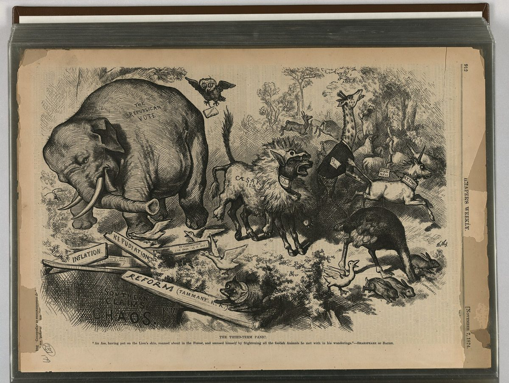

Lesson 2: Two parties, two animals
Recap check
- Name the three branches of government.
- Who can vote today?
- What did the 19th Amendment change in 1920?
Answer key
- Congress, the President, the Supreme Court.
- American citizens who are eighteen and, in most states, registered.
- Women could vote in every state.
What we need to say
Today you need to describe the cartoons, explain how the symbols are used, and correct wrong ideas.
Words to say it
| Word | Meaning | Example |
|---|---|---|
| a party | a group of people with the same political ideas | The Republican Party is one of the two main parties. |
| a symbol | a picture that represents an idea | The elephant is the symbol of the Republicans. |
| a cartoon | a funny drawing about the news | Thomas Nast drew political cartoons. |
| an independent | a politician who is not in a party | Two senators are independents. |
Use the words
Odd one out. Find the word that does not belong and say why.
- donkey, elephant, ballot, lion
- Democrat, Republican, independent, cartoon
- term, year, month, symbol
- cartoon, drawing, engraving, senator
Answer key
- ballot: the others are animals in the cartoons.
- cartoon: the others are political labels.
- symbol: the others are periods of time.
- senator: the others are kinds of pictures.
More word practice
Definitions: write the word
Read the definition and write the word. Word bank: a cartoonist, a party, a term, a symbol, an independent, a cartoon.
- a funny drawing about the news
- a person who draws cartoons
- a group with the same political ideas
- a picture that represents an idea
- a politician who is not in a party
- the time a person stays in office
Answer key
- a cartoon
- a cartoonist
- a party
- a symbol
- an independent
- a term
Word families
Complete with the adjective or the person.
- politics: ______ (adjective), a politician
- democracy: ______ (adjective), a Democrat
- a republic: ______ (adjective)
- a symbol: ______ (adjective)
- a cartoon: a ______ (person)
- power: ______ (adjective)
Answer key
- political
- democratic
- republican
- symbolic
- cartoonist
- powerful
Read, one sentence per line
- Two big parties dominate American politics: the Democratic Party and the Republican Party.
- Other parties and independent candidates exist, but they rarely win.
- The symbols of the two parties come from cartoons.
- The cartoonist Thomas Nast drew a donkey for the Democrats in 1870 and an elephant labelled The Republican Vote in 1874, in the magazine Harper's Weekly.
- The parties later adopted these animals.
- In the 1874 cartoon, the panic is about a third term for President Grant.
Look at the diagram
Grid: the two main parties
| Democratic Party | Republican Party | |
|---|---|---|
| Symbol | the donkey (Nast, 1870) | the elephant (Nast, 1874) |
| Colour on TV maps | blue | red |
| Nickname | the Democrats | the GOP, the Grand Old Party |
| In 2026 | minority in the House and in the Senate | the President (Donald Trump) and a majority in both chambers |
The colours red and blue are a habit of TV channels and newspapers, fixed around the 2000 election; they are not official.
Look at the drawing

Picture labelling: The Third-Term Panic (1874)
Look at Nast's cartoon. Find:
- the elephant and the words written on it
- the donkey in a lion skin
- the word on the lion skin
- three boards with words under the elephant
Answer key
- on the left: The Republican Vote
- in the middle
- Caesarism
- Inflation, Repudiation, Reform
Tasks
- Look at the two cartoons. Which animal do you see first? Where is it? What is it doing?
- Complete the table: party, symbol, colour on election maps.
- Say it: a partner says something wrong about the parties (The elephant is used by the Democrats). Correct it with the passive negative, then ask a passive question back.
Grammar on the board
To explain how a symbol is used and to correct a wrong idea, we need passive questions and negatives: Is the donkey used by the Democrats? Yes, it is. The elephant is not used by the Democrats.
Listen to your teacher, then copy the board.
The passive voice (2): questions and negatives; adjectives
- Rule
- The donkey is used by the Democrats. It is not used by the Republicans. Is it used by the Democrats? Yes, it is.
- Form
- The donkey is not used by the Republicans.
Is the donkey used by the Democrats? Yes, it is. / No, it isn't. - Examples
- The colours are not fixed by law.
- Are independents often elected? No, they aren't.
- Watch out
- Does the donkey used by the Democrats? → Is the donkey used ...?
- The elephant don't used. → The elephant is not used.
- French and English
- French: un gros éléphant gris (adjective after the noun). English: a big grey elephant (adjectives before the noun; opinion, size, age, colour, origin).
Quick check
- Negative: The elephant is used by the Democrats.
- Question: The donkey is used by the Democrats.
- Short answer: Are the colours fixed by law? No, ...
Answer key
- The elephant is not used by the Democrats.
- Is the donkey used by the Democrats?
- they aren't.
Practise
Stage 1. Recognise
Question (Q), negative (N) or affirmative (A)? All the sentences are passive.
- Is the donkey used by the Democrats?
- The elephant is not used by the Democrats.
- Red is used for the Republicans on TV maps.
- Are third parties elected often?
- The colours are not fixed by law.
Answer key
- Q
- N
- A
- Q
- N
Stage 2. Transform
Make the sentence negative (1 to 4), then make a question (5 to 8).
- The elephant is used by the Democrats.
- The president is elected for six years.
- Third parties are elected very often.
- The colours are fixed by law.
- The donkey is used by the Democrats.
Answer key
- The elephant is not used by the Democrats.
- The president is not elected for six years.
- Third parties are not elected very often.
- The colours are not fixed by law.
- Is the donkey used by the Democrats?
Stage 3. Guided production
Your partner is wrong. Correct each idea with a passive negative, then give the right information.
- The elephant is used by the Democrats.
- Blue is used for the Republicans.
- The president is elected for six years.
- The symbols are chosen by law.
- In The Third-Term Panic, the elephant is dressed in a lion skin.
Answer key
- No, it is not used by the Democrats. It is used by the Republicans.
- No, it is not. Red is used for the Republicans.
- No, he is not. The president is elected for four years.
- No, they are not chosen by law. They come from cartoons.
- No, it is not. The donkey is dressed in a lion skin.
A. Past participles
Write the past participle.
- draw
- use
- know
- see
- elect
Answer key
- drawn
- used
- known
- seen
- elected
B. Make the sentence negative
Use is not or are not.
- The elephant is used by the Democrats.
- Third parties are elected very often.
- The president is elected for six years.
Answer key
- The elephant is not used by the Democrats.
- Third parties are not elected very often.
- The president is not elected for six years.
Figure of speech
Figures of speech: personification and the fable
In Nast's cartoons, animals act like people: this is personification. A fable is a short story with animals and a lesson. The 1874 cartoon plays with Aesop's fable The Ass in the Lion's Skin: a donkey wears a lion skin to frighten the other animals.
- What does the elephant stand for in 1874?
- Why does the donkey wear a lion skin?
- What is the lesson of Aesop's fable?
Answer key
- The Republican vote.
- To look strong and frightening.
- You can look dangerous, but people will find out who you really are.
Say it
Oral task: present your party symbol (thirty seconds)
Steps
- Name your party.
- Show the symbol.
- Explain why.
- Give one promise.
- My party is called ...
- Our symbol is ...
- We chose it because ...
- If you vote for us, ...
Model answer
My party is called the Bee Party. Our symbol is a bee. We chose it because bees work together. Our promise: more green spaces in town.
Gap-fill worksheet
- The symbol of the Democrats is a .
- The symbol of the Republicans is an .
- Thomas drew both animals.
- A person can be elected president only .
- Donald Trump is a president.
- Thomas Nast was a famous .
- A is a group with the same political ideas.
- Red is the of the Republicans on TV maps.
- Bernie Sanders is an senator.
- The of a president is four years.
Answer key
- donkey
- elephant
- Nast
- twice
- Republican
- cartoonist
- party
- colour
- independent
- term
Going further (optional)
It is said / believed / thought that + clause, or subject + is said to + infinitive. It is said that Nast created the elephant symbol. = Nast is said to have created the elephant symbol.
Translate into English
- L'éléphant n'est pas utilisé par les démocrates.
- Est-ce que l'âne est utilisé par les démocrates ?
Answer key
- The elephant is not used by the Democrats.
- Is the donkey used by the Democrats?